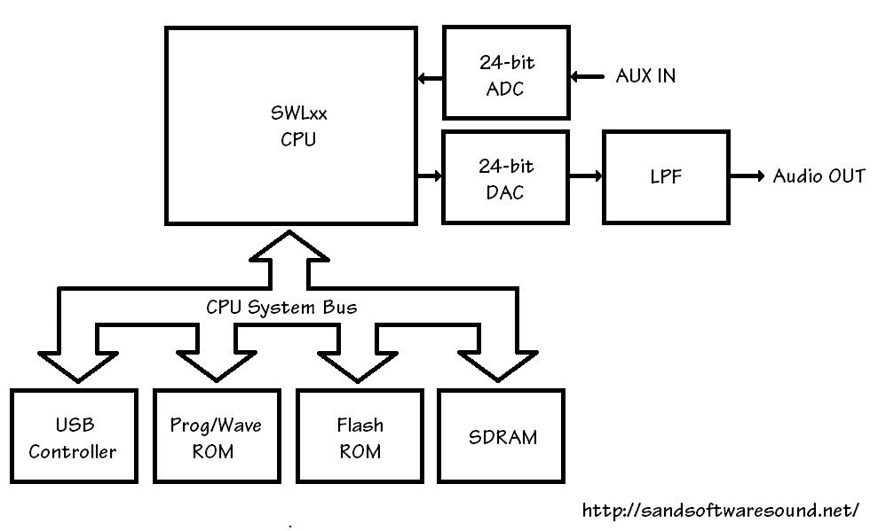

Компания Yamaha выпускает широкий ассортимент клавишных инструментов: от недорогих клавиатур начального уровня до высококлассных синтезаторов и цифровых рабочих станций (также известных как «аранжировщики» или «самоиграйки»).
В рамках одного сегмента рынка перед инженерами стоит задача: разработать, произвести и протестировать продукт с желаемым набором функций по целевой цене продажи. Я не буду здесь говорить о рентабельности, поскольку никто её на самом деле не знает, кроме самой компании Yamaha. Однако мы знаем, что амортизация оборудования, единовременные и периодические затраты должны быть достаточно низкими, чтобы обеспечить значительную прибыль. Внимательное отношение к затратам — это просто повседневная реальность.
Сегмент начального уровня является наиболее чувствительным к цене, потому что большинство покупателей в этом сегменте ищут недорогие клавиши с базовыми функциями. Представьте, что «родители покупают первый клавишный инструмент для ребёнка, который может отказаться от него через неделю или две». Сегмент начального уровня (с ценой до 199$) превосходит по продажам сегмент портативных клавиатур среднего и высокого класса почти в 2 раза:
Категория Количество Розничная
стоимость
------------------------------------------------------------
Акустические гитары 1 499 000 ед. 678 000 000 $
Электрогитары 1 132 000 ед. 506 000 000 $
Цифровые пианино 135 000 ед. 165 000 000 $
Синтезаторы 81 000 ед. 104 000 000 $
Контроллерные клавиатуры 160 000 ед. 32 000 000 $
Портативные клавиатуры
стоимостью менее 199 $ 656 000 ед. 64 000 000 $
Портативные клавиатуры
стоимостью более 199 $ 350 000 ед. 123 000 000 $
Всего портативных клавиатур 1 006 000 ед. 187 000 000 $
Статистика продаж за 2014 год, рынок США
Любителям синтезаторов следует отметить, что, хотя средняя цена продажи (ASP) синтезаторов выше, в сегменте простых портативных клавиатур продаётся гораздо больше устройств. К счастью, для производителей портативных клавиатур начального уровня объём продаж относительно высок, а единовременные затраты можно распределить на большее количество устройств, чем в случае с дорогими синтезаторами.
В сегменте начального уровня есть ещё один важный фактор — стремление к портативности и работе от аккумулятора. Это конструктивное решение ограничивает количество электроэнергии, доступной для работу устройства, и, следовательно, ограничивает вычислительную мощность. Некоторую динамическую мощность можно получить за счёт более низкой тактовой частоты процессора. Люди, привыкшие к процессорам с тактовой частотой в гигагерцах, могут быть шокированы такими низкими тактовыми частотами. Более низкая тактовая частота упрощает охлаждение и снижает общий вес за счёт отказа от радиаторов и охлаждающих вентиляторов.
LSI против единичных продуктов
Yamaha рассматривает свой собственный опыт в области крупномасштабной интеграции (LSI) как конкурентное преимущество. Хотя Yamaha по возможности использует стандартные компоненты, из которых строится любое цифровое оборудование, генерация звуковых сигналов и цифровая обработка сигналов (DSP) выполняются за счет собственных чипов.
Пользовательский интерфейс и управление (например, связь по USB, MIDI, ЖК-дисплей и т. д.) хорошо сочетаются с технологией стандартных центральных процессоров. Компания Yamaha — и Roland — имеет долгую историю сотрудничества с процессорами (контроллерами) архитектуры H8 и SH от Hitachi, ныне Renesas. В ранних продуктах использовались микроконтроллеры H8 для функций центрального процессора. Со временем Yamaha перешла на семейство контроллеров с сокращённым набором команд (RISC) «Super H». (В 2011 году Renesas объявила о прекращении выпуска линейки H8.)
Компания Yamaha вложила значительные средства в программное обеспечение, созданное и настроенное для семейства SH. Таким образом, переход на новую стандартную архитектуру (ARM) — довольно серьёзное дело с высокими внутренними затратами. Компания Yamaha использует ARM для сканирования/управления панелью в синтезаторах Reface и процессоры ARM для вычислений в аранжировочных станциях Montage и Genos. Время и опыт покажут, будет ли ARM использоваться в сегментах начального и среднего уровня.
Старый, верный друг
Модели Yamaha начального уровня основаны на «старых добрых» процессорах SWL, разработанных компанией Yamaha. Процессоры SWL используются во всех моделях начального уровня — это хороший способ наладить массовое производство комплектующих. За прошедшие годы семейство SWL претерпело несколько изменений. Я не собираюсь пересказывать эту историю здесь.
Кратко: семейство SWL - это, по сути, специализированные процессоры с 32-х битным ядром ARM7TDMI, появившимся в 1997 году. В современных итерациях в одном чипе находится как само ядро, так и всяческая переферия - USB-хост, JTAG, несколько Serial-портов, SDRAM и т. д.
SWL01U использовался во многих продуктах, в том числе в PSR-E443. Внешний тактовый генератор работает на частоте 16,9344 МГц, что позволяет получить внутреннюю тактовую частоту 33,8688 МГц путём масштабирования. Относительно низкая тактовая частота снижает нагрев и энергопотребление. На следующей схеме показан типичный «вычислительный комплекс» в клавиатуре начального уровня.

Структура, изображённая на схеме, является общей для всех продуктов Yamaha начального уровня. Если вы заглянете в руководство по эксплуатации конкретной клавиатуры начального уровня, то, скорее всего, найдёте «вычислительный комплекс», подобный этому, хотя объём памяти и другие характеристики зависят от модели.
SWL01U обеспечивает работу шины процессора, к которой подключаются USB-контроллер (опционально), программа/ПЗУ, флэш-ПЗУ и SDRAM. SWL01 имеет множество встроенных интерфейсов: сканирование клавиатуры, интерфейс светодиода/ЖК-дисплея, последовательный аудиопорт (АЦП, ЦАП), датчик положения ручки управления и т. д. SWL01U имеет встроенный USB-контроллер, который можно использовать в сверхбюджетных конструкциях с минимальным количеством компонентов.
SDRAM — это, конечно, рабочая память с возможностью чтения и записи. Флэш-память сохраняет пользовательские данные при отключении питания.
Данные программы и формы волны хранятся в одном и том же компоненте физической памяти. В случае PSR-E443 память для программы и формы волны представляет собой 16-мегабайтную параллельную флэш-память NOR. Таким образом, заводской набор звуков занимает менее 16 мегабайт. Голоса панелей, набор звуков XGlite и ударные установки помещаются в эту небольшую память вместе с программным обеспечением E443.
SWL01U объединяет 32 канала генерации тонов и относительно «лёгкие» DSP-эффекты (реверберация, хорус и флэнджер). У меня не было возможности ознакомиться с руководством по эксплуатации PSR-E453 (или E463). Полифония E453 увеличилась до 48 голосов, а количество типов DSP-эффектов немного возросло. Я ожидаю, что в этих новых клавиатурах появится новый, обновлённый представитель семейства SWL.
Любой, кто хоть немного знаком с микрокомпьютерными системами, взглянув на приведённую выше схему, скажет: «Это просто компьютерная система», и будет прав. Однако простота системы — и её низкая стоимость — сильно ограничивают генерацию тонов и обработку эффектов. Узким местом является общая системная шина. Весь трафик должен проходить по этой шине, будь то инструкции для сканирования матрицы клавиатуры, образцы сигналов для генерации тонов или рабочие данные для DSP-эффектов. Пропускная способность шины (памяти) ограничена, и её необходимо распределять несколькими способами.
Мы часто думаем, что генерация звука ограничена вычислительными мощностями. Генерация звука также может быть ограничена пропускной способностью памяти (или шины). Каждый монофонический канал генерации звука должен считывать 88 200 байт в секунду:
44 100 Гц * 2 байта = 88 200 байт в секунду
Для 32 каналов генерации звуковых сигналов общая требуемая пропускная способность составляет:
88 200 байт в секунду * 32 канала = 2 822 400 байт в секунду
Эта скорость должна быть гарантирована, чтобы избежать слышимых артефактов. (Аппаратное обеспечение, вероятно, уделяет наибольшее внимание считыванию тонов.)
Системная шина работает не с той же скоростью, что и центральный процессор. Если предположить, что на одну операцию шины приходится 2 такта (консервативная оценка), то 2,8 МБ/с — это значительная часть доступной пропускной способности системной шины (17 процентов). Количество каналов нельзя увеличить, не влияя на задержку таких операций хоста, как сканирование клавиш и управление плеером в реальном времени (например, с помощью ручек на передней панели).
Много или мало?
Продукты начального уровня имеют небольшое количество компонентов благодаря всем функциям, интегрированным в SWL. Небольшое количество компонентов имеет множество преимуществ, в том числе меньшие размеры печатных плат (ПП), меньшую мощность, меньшее количество паяных соединений, которые могут выйти из строя во время производства, меньшие размеры корпуса и т. д.
SWP01U имеет 176 контактов на корпусе небольшого размера с четырьмя плоскими поверхностями для монтажа. Благодаря тому, что весь трафик памяти передаётся по шине центрального процессора, то есть Yamaha не использует выделенный канал памяти для выборки сигналов, количество контактов относительно невелико. [Я никогда не думал, что когда-нибудь буду называть 176 контактов «относительно небольшим количеством».] В других решениях Yamaha количество контактов намного больше из-за отдельных выделенных каналов памяти. Однако эти решения обеспечивают гораздо более высокий уровень производительности и полифонии. Подробнее об этом в будущих постах.
Так что насчет частоты?
Что не так с этими тактовыми частотами? Почему не что-то «ровное», например, 16 МГц?
Оказывается, 16,9344 МГц кратно частоте воспроизведения сэмплов:
16 934 400 Гц = 44 100 Гц * 24 бита * 16
SWL генерирует тактовую частоту выборки для АЦП и ЦАП.
АЦП PSR-E443 — это 24-битный аналого-цифровой преобразователь Texas Instruments PCM1803ADBR. В примечании к схеме указано: «MCLK=768fs, fs=44,1 кГц, 24-битный левый сдвиг, HPF включен, ведомый режим». 768*fs — это 33,8688 МГц, что в точности соответствует тактовой частоте процессора.
ЦАП PSR-E443 представляет собой 24-битный цифро-аналоговый преобразователь Cirrus Logic (Wolfson) WM8524CGEDT/R. В примечании к схеме указано: «SYSCLK=33,8688 МГц (768 мкс), BCLK=2,8224 МГц (64 мкс), WCLK=44,1 кГц (1 мкс), 24-битный с выравниванием по левому краю».
Вы можете найти технические характеристики АЦП и ЦАП в интернете.
PCM803A и WM8524 поддерживают три аудиоформата: с выравниванием по левому краю, с выравниванием по правому краю и I2S. Форматы и тактовая схема довольно распространены и стандартны, и поддерживаются большинством стандартных компонентов АУДИОАДС и ЦАП. SWL-процессор, АЦП и DAC остаются синхронизированными, поскольку тактовая частота процессора и тактовая частота выборки - это одно и то же.
Итого
Я надеюсь, что эта статья в блоге дала вам некоторое представление о дизайне клавишных музыкальных инструментов начального уровня.